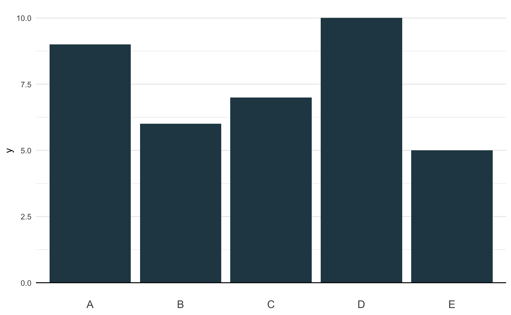
Gráfico de Colunas
Um gráfico do colunas é uma ferramenta de visualização poderosa e versátil. Tipicamente, cada coluna corresponde ao valor de uma classe.
Neste post vamos aprender a montar gráficos de colunas usando o pacote ggplot2. Há duas funções para criar gráficos de colunas: o geom_bar() e geom_col(). A primeira função conta uma quantidade de ocorrências, é útil para resumir visualmente uma base de dados. Já a segunda função plota a altura da coluna segundo os valores nos dados, então é mais útil quando os dados já estão agregados. Estas diferenças ficarão mais claras nos exemplos abaixo.
R
Antes de iniciar precisamos carregar o pacote ggplot2, que traz as funções necessárias para montar os gráficos. Adicionalmente, vamos carregar o pacote wooldridge, que carrega as bases de dados utilizadas no livro Introductory Econometrics: A Modern Approach do economista Jeffrey Wooldridge. Além deste, vamos carregar também o pacote gapminder para usar a base homônima, que compila dados de PIB per capita, população e expectativa de vida de diversos países no mundo1 .
Caso os pacotes não estejam instalados é preciso executar primeiro o código abaixo.
# Instala os pacotes necessários
install.packages(c("ggplot2", "wooldridge", "gapminder"))Para carregar os pactoes utilizamos a função library.
# Carrega o pacote ggplot2
library("ggplot2")
# Carrega o pacote wooldridge
library("wooldridge")
# Carrega o pacote gapminder
library("gapminder")
# Carraga a base de dados hprice1
data("hprice1")ggplot2
O pacote ggplot2 segue uma sintaxe bastante consistente, que permite “somar” elementos visuais sobre um mesmo gráfico. Isto permite que se crie uma infinidade de gráficos complexos a partir de elementos simples. Os elementos visuais são todos chamados por funções geom como as funções geom_bar (barra) e geom_col (coluna) citadas acima. Estes elementos são somados de maneira intuitiva usando o sinal de soma +.
Essencialmente, temos os seguintes elementos principais:
data- Uma base de dados.aes- Variáveis que são mapeadas em elementos visuais.geom- Um objeto geométrico.
Estes elementos são combinados numa sintaxe recorrente. A função ggplot tem apenas dois argumentos data e aes. Adicionamos uma função geom nesta chamada inicial como no exemplo abaixo. Note que usamos o geom_col mas poderíamos utilizar qualquer outra função como geom_point.
ggplot(data = dados, aes(x = varivel_x, y = variavel_y)) +
geom_col()geom_bar
A função geom_bar() exige apenas um argumento x que é o nome da variável que será “contada”. Esta função conta a quantidade de vezes que os elementos da variável x se repetem e plota este valor num gráfico de barras.
Vamos utilizar a base hprice1, que agrega o preço de venda de imóveis em Boston em 1990. Para inspecionar os dados utilizamos a função head.
head(hprice1) price assess bdrms lotsize sqrft colonial lprice lassess llotsize
1 300.000 349.1 4 6126 2438 1 5.703783 5.855359 8.720297
2 370.000 351.5 3 9903 2076 1 5.913503 5.862210 9.200593
3 191.000 217.7 3 5200 1374 0 5.252274 5.383118 8.556414
4 195.000 231.8 3 4600 1448 1 5.273000 5.445875 8.433811
5 373.000 319.1 4 6095 2514 1 5.921578 5.765504 8.715224
6 466.275 414.5 5 8566 2754 1 6.144775 6.027073 9.055556
lsqrft
1 7.798934
2 7.638198
3 7.225482
4 7.277938
5 7.829630
6 7.920810A coluna bdrms indica o número de dormitórios do imóvel. Podemos contar o número de imóveis pelo número de dormitórios usando a função geom_bar().
ggplot(data = hprice1, aes(x = factor(bdrms))) +
geom_bar()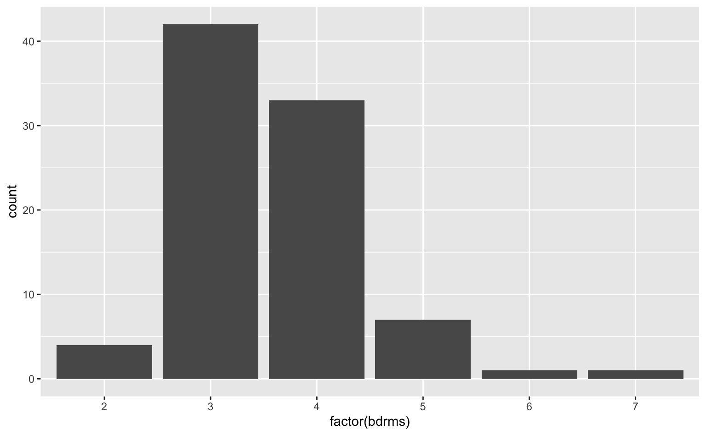
Vamos quebrar o código acima em detalhes. Primeiro, usamos a função ggplot() para declarar que queremos fazer um gráfico.
Colocamos os argumentos data e aes() dentro desta função. O argumento data deve ser o nome da nossa base de dados: neste caso, data = hprice1.
A função aes() é a que transforma as variáveis (as colunas da base de dados) em elementos visuais. Neste caso ele vai transformar o número de dormitórios em algum elemento visual. Escolhemos aes(x = factor(bdrms)). Aqui, a função factor é opcional, mas fortemente recomendada. Ela força a variável bdrms a se comportar como uma variável categórica (ao invés de uma variável contínua).
Especificamos qual deve ser o elemento visual somando a função geom_bar() no código inicial. Esta função indica que queremos um gráfico de barras.
Unindo todas estes elementos temos um código enxuto que plota o gráfico. Vemos que os imóveis de 3 e 4 dormitórios são os mais comuns.
ggplot(data = hprice1, aes(x = factor(bdrms))) +
geom_bar()
geom_col
A função geom_col desenha o mesmo tipo de gráfico que a função geom_bar, mas ela exige que sejam inputados dois argumentos: x e y. Geralmente, x é a classe ou categoria, enquanto que y é o valor que será transformado na “altura” da coluna.
Vamos montar um exemplo simples. Nosso objetivo é visualizar as medalhas olímpicas brasileiras na mais recente edição das Olimpíadas, em 2020 (que foi realizada apenas em 2021). Para isto, vamos inserir os dados diretamente usando a função data.frame(). Esta função permite criar uma base de dados manualmente. A sintaxe da função é bastante simples: primeiro declaramos o nome da coluna e depois os seus valores; vamos acrescentando colunas separando-as por vírgulas.
# Exemplo de como usar a função data.frame
dados <- data.frame(
nome_1 = c(...),
nome_2 = c(...),
...
)Na última Olimpíada, o Brasil obteve 7 medalhas de ouro, 6 de prata e 8 de bronze. O código abaixo estrutura estes dados num data.frame. Aqui a função factor ajuda a organizar os dados, pois impõe uma ordem de grandeza na variável categórica medalha.
# Cria a base de dados
olimpiadas <- data.frame(
medalha = factor(c("ouro", "prata", "bronze"), levels = c("ouro", "prata", "bronze")),
contagem = c(7, 6, 8)
)
# Exibe os dados
olimpiadas| medalha | contagem |
|---|---|
| ouro | 7 |
| prata | 6 |
| bronze | 8 |
Montamos um gráfico de colunas usando o código abaixo.
ggplot(data = olimpiadas, aes(x = medalha, y = contagem)) +
geom_col()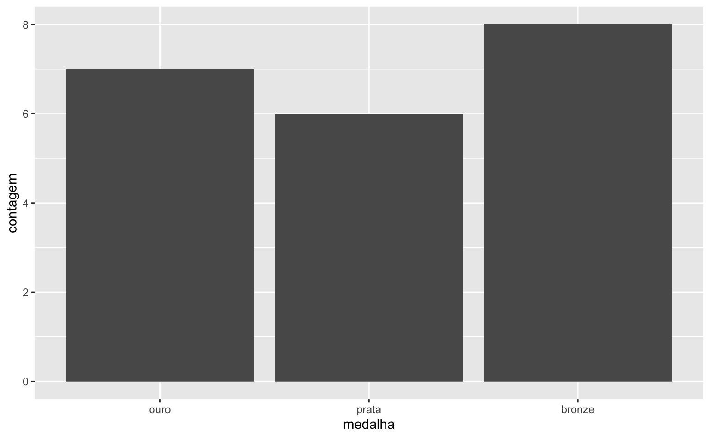
Novamente, vamos decompor o código. Primeiro, usamos a função ggplot() para declarar que queremos fazer um gráfico. Precisamos informar: (1) uma base de dados, data; (2) duas variáveis que serão mapeadas aes(x, y); (3) um “elemento geométrico” geom.
O argumento data deve ser o nome da nossa base de dados: neste caso, data = hprice1.
A função aes() é o que transforma as variáveis (as colunas da base de dados) em elementos visuais. Escolhemos aes(x = medalha, y = contagem).
A primeira variável é categórica e indica o tipo da medalha. Como especificamos a ordem de grandeza no código anterior, a função aes() sabe que ouro > prata > bronze.
A segunda variável é numérica e indica quantas medalhas de cada tipo foram ganhas. Na prática, o aes() usa esta informação para definir a altura da coluna.
Especificamos qual deve ser o elemento visual somando a função geom_col() no código inicial. Esta função indica que queremos um gráfico de colunas.
Características estéticas
Podemos customizar um gráfico de ggplot modificando os seus elementos estéticos. Um elemento estético pode assumir dois tipos de valor: constante ou variável. Um valor constante é um número ou texto, enquanto uma variável é uma coluna da nossa base de dados.
Um gráfico de colunas tem três elementos estéticos principais:
color- Define a cor do contorno da coluna.fill- Define a cor que preenche a coluna.alpha- Define o nível de transparência das cores.
Vale notar que os argumento x e y também são elementos estéticos. Mais especificamente eles são elementos estéticos variáveis, logo são mapeado com a função aes(). No caso da função geom_bar() apenas x é obrigatório enquanto que a função geom_col() exige tanto x como y.
Cores
Temos o controle de duas cores: do contorno da coluna (color) e da cor que preenche a coluna (fill). O exemplo abaixo ilustra como podemos modificar estes elementos estéticos. No exemplo usamos a cor steelblue para preencher a coluna e definimos um contorno escuro usando color = "black".
Uma lista completa de cores com nomes está disponível aqui. Também podemos especificar as cores usando código hexadecimal.
# Exemplo chamando as cores por nomes
ggplot(data = olimpiadas, aes(x = medalha, y = contagem)) +
geom_col(color = "black", fill = "steelblue")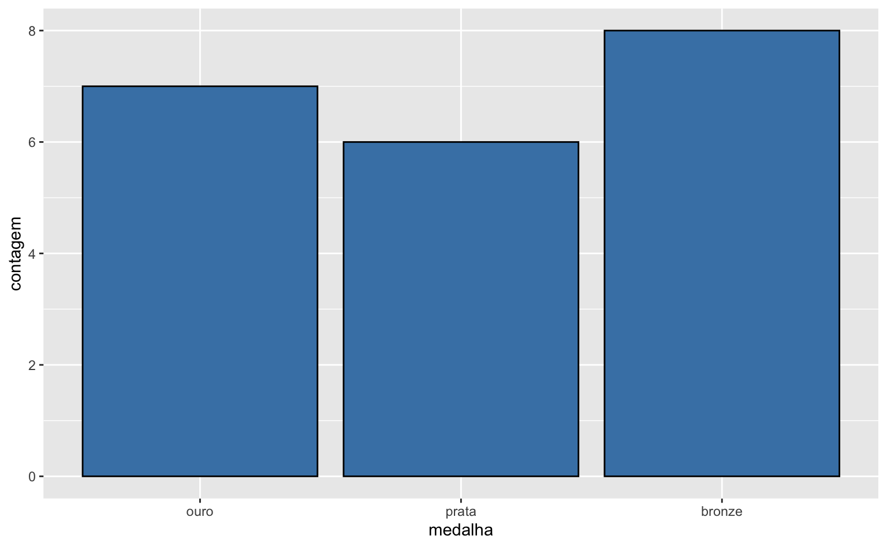
# Exemplo usando cores em hexadecimal
ggplot(data = olimpiadas, aes(x = medalha, y = contagem)) +
geom_col(color = "#E5E5E5", fill = "#2A9D8F")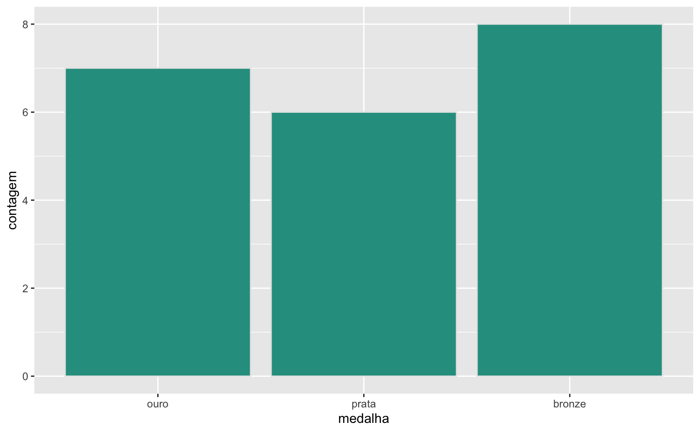
Alpha
O parâmetro alpha varia entre 0 e 1 e indica a transparências das cores. Quanto menor o valor de alpha, maior será a transparência no resultado final.
ggplot(data = olimpiadas, aes(x = medalha, y = contagem)) +
geom_col(color = "black", fill = "steelblue", alpha = 0.3)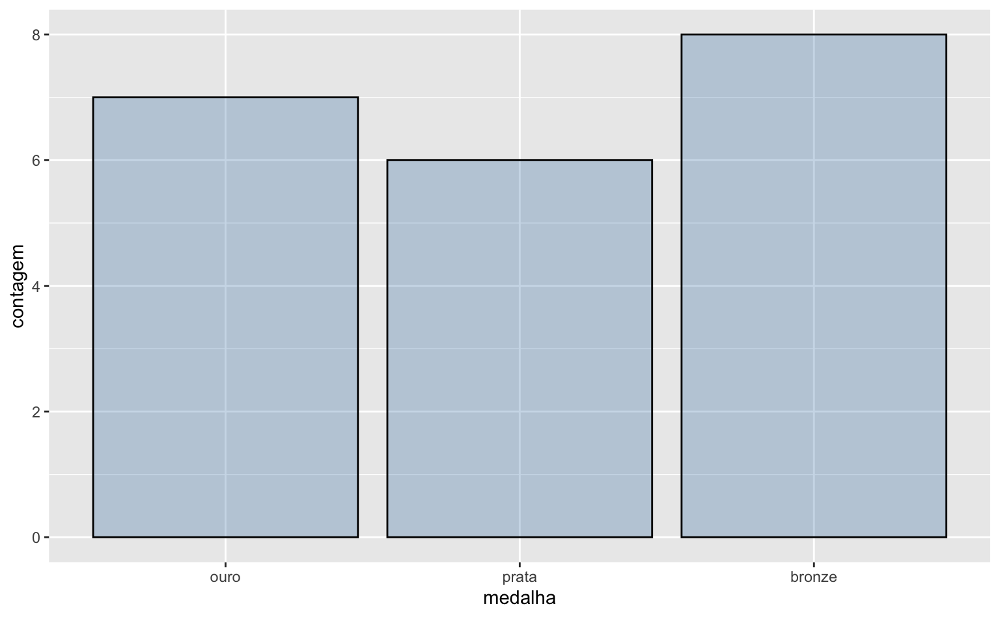
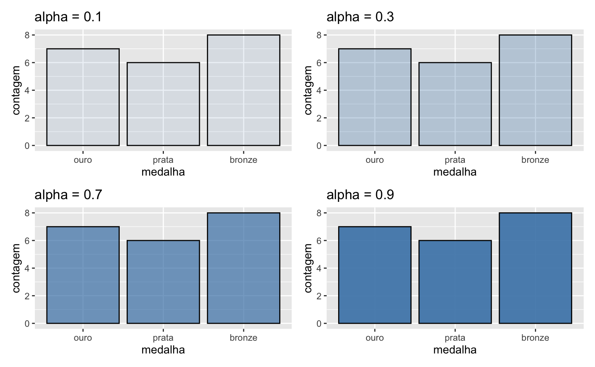
Usando cores para representar variáveis
Os elementos estéticos também podem ser utilizados para representar variáveis nos dados. Vamos voltar para a função aes. Como expliquei acima, esta função mapeia nossos dados em elementos visuais. No caso da função geom_col(), ela mapeia a variável x no eixo-x, representando a categoria e variável y no eixo-y é a altura da barra, que indica seu valor.
Mas podemos mapear as variáveis nos elementos estéticos: color, fill, alpha.
O uso prático mais comum é de variar o elemento fill, a cor que preenche a coluna, segundo alguma variável nos dados.
Nosso gráfico de medalhas olímpicas ficaria mais intuitivo se as cores das colunas correspondessem às cores das medalhas. Vamos tentar construir este gráfico.
Como queremos que a cor de cada barra seja difernete para cada tipo de medalha temos de incluir o argumento aes(fill = medalha) dentro de geom_col().
ggplot(data = olimpiadas, aes(x = medalha, y = contagem)) +
geom_col(aes(fill = medalha))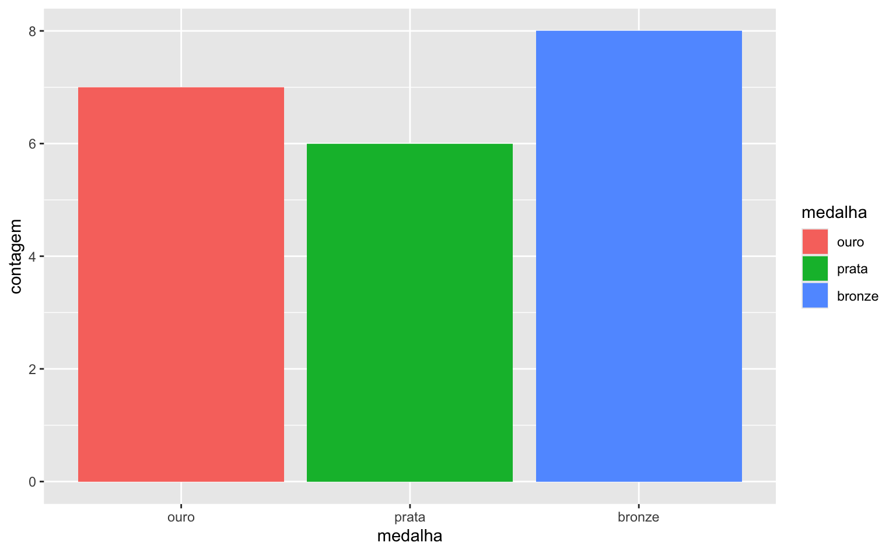
Agora o R mapeou uma cor diferente para cada valor distinto de medalha. Infelizmente, as cores padrão não nos ajudam neste caso. Podemos escolher estas cores manualmente usando a função scale_fill_manual(). O código abaixo faz este ajuste. As cores são inseridas dentro do argumento values em formato hexadecimal. Por fim, adicionamos a linha guides(fill = "none") para remover a legenda redundante.
ggplot(data = olimpiadas, aes(x = medalha, y = contagem)) +
geom_col(aes(fill = medalha)) +
# Escolhe manualmente as cores das colunas
scale_fill_manual(values = c("#FFD700", "#C0C0C0", "#CD7F32")) +
# Remove a legenda
guides(fill = "none")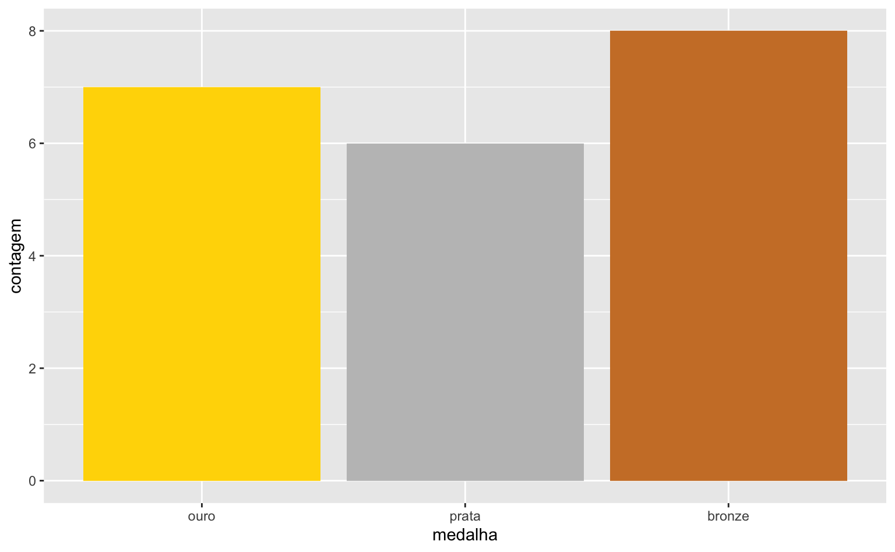
Usando cores quando há múltiplos grupos
Quando temos muitos grupos há duas opções para representar os dados: (1) empilhamos os diferentes grupos; ou (2) colocamos as colunas lado a lado.
Para exemplificar, vamos aumentar nossa base de dados com medalhas olímpicas do Japão, Itália, Brasil e Nova Zelândia.
olimp <- data.frame(
pais = factor(
c("Japão", "Japão", "Japão", "Itália", "Itália", "Itália", "Brasil",
"Brasil", "Brasil", "Nova Zelândia", "Nova Zelândia", "Nova Zelândia"),
levels = c("Japão", "Itália", "Brasil", "Nova Zelândia")),
medalha = factor(
c("Ouro", "Prata", "Bronze", "Ouro", "Prata", "Bronze", "Ouro", "Prata",
"Bronze", "Ouro", "Prata", "Bronze"),
levels = c("Ouro", "Prata", "Bronze")),
contagem = c(20, 28, 23, 10, 10, 20, 7, 6, 8, 7, 6, 7)
)| pais | medalha | contagem |
|---|---|---|
| Japão | Ouro | 20 |
| Japão | Prata | 28 |
| Japão | Bronze | 23 |
| Itália | Ouro | 10 |
| Itália | Prata | 10 |
| Itália | Bronze | 20 |
| Brasil | Ouro | 7 |
| Brasil | Prata | 6 |
| Brasil | Bronze | 8 |
| Nova Zelândia | Ouro | 7 |
| Nova Zelândia | Prata | 6 |
| Nova Zelândia | Bronze | 7 |
Agora, queremos que cada país seja representado por uma cor distinta. Vamos, então, inserir aes(fill = pais) dentro de geom_col(). Note que o padrão da função é de empilhar os resultados.
Ou seja, temos o número total de medalhas de ouro, prata e bronze, onde cada cor representa um país diferente.
ggplot(olimp, aes(x = medalha, y = contagem)) +
geom_col(aes(fill = pais))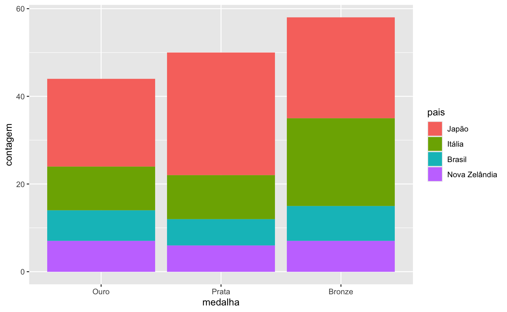
Se quiseremos ter uma visualização que represente mais diretamente a performance de cada país temos que incluir um argumento adicional position = "dodge" dentro da função geom_col(). Agora fica mais evidente, por exemplo, que o Japão teve um número grande de medalhas de prata e que o Brasil e a Nova Zelândia tiveram desempenhos muito semelhantes - o Brasil ficou na frente por causa de uma medalha de bronze.
ggplot(olimp, aes(x = medalha, y = contagem)) +
geom_col(aes(fill = pais), position = "dodge")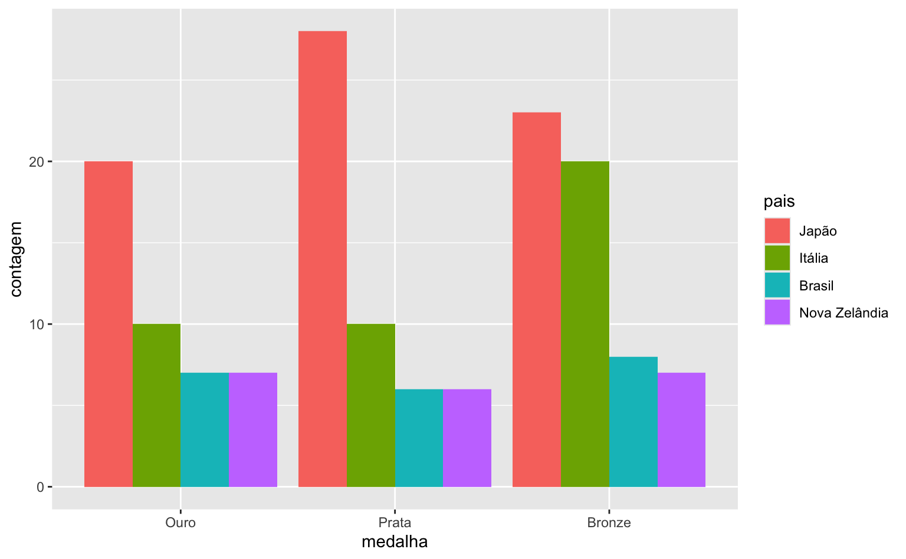
O padrão da função geom_col() é position = "stack", que empilha as observações. Novamente, podemos escolher manualmente as cores dos grupos usando a função scale_fill_manual()
ggplot(olimp, aes(x = medalha, y = contagem)) +
geom_col(aes(fill = pais), position = "dodge") +
# Escolhe manualmente as cores das colunas
scale_fill_manual(
# Título da legenda (opcional)
name = "País",
# Valores das cores
values = c("#d62828", "#008C45", "#FFDF00", "#012169"))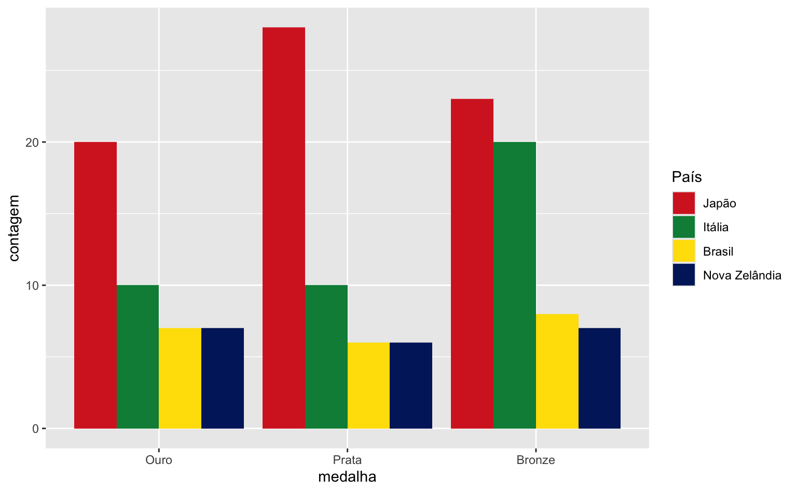
Vale notar que existem vários pacotes e funções com cores pré-definidas que simplificam o processo manual de escolher as cores. O exemplo mais simples é o scale_fill_brewer() que utiliza as paletas de cores do Color Brewer.
ggplot(olimp, aes(x = medalha, y = contagem)) +
geom_col(aes(fill = pais), position = "dodge") +
scale_fill_brewer(
# Título da legenda (opcional) - omite o título
name = "",
# Tipo ("qual" - qualitativo, "div" - divergente ou "seq" - sequencial)
type = "qual",
# Escolha da paleta
palette = 6
)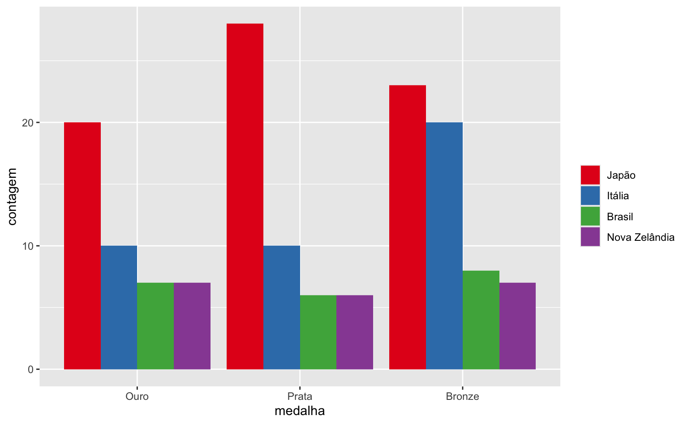
Uma última opção é de forçar o eixo-y a operar dentro do intervalo 0-1, isto é, fazer com que as barras somem 1 e representem a proporção de cada grupo. Fazemos isto utilizando o argumento position = "fill" dentro de geom_col().
No gráfico abaixo temos a participação relativa de cada país no total de medalhas. Note que este tipo de gráfico faz mais sentido quando temos a totalidade dos grupos.
ggplot(olimp, aes(x = medalha, y = contagem)) +
geom_col(aes(fill = pais), position = "fill")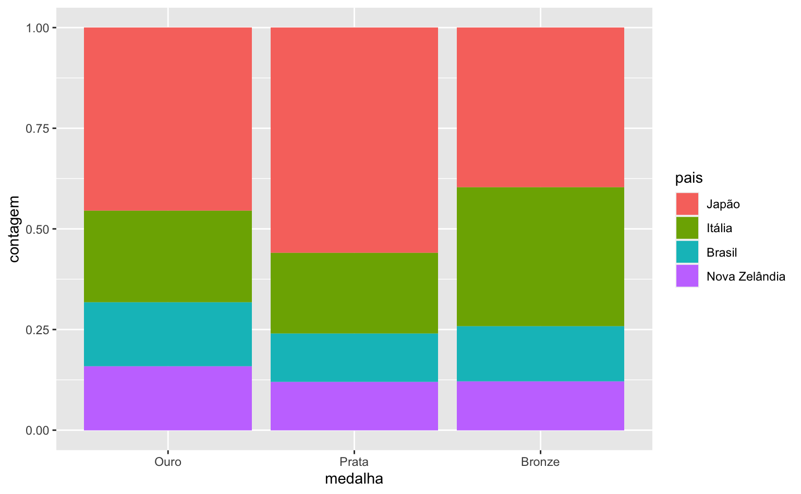
No exemplo abaixo montamos uma nova base de dados com o número de medalhas por continente. Para reduzir a digitação manual utilizamos a função rep() que repete uma mesma palavra. Agora que temos a totalidade dos grupos faz mais sentido um gráfico de colunas que represente a proporção de cada grupo.
olimp_continentes <- data.frame(
continente = factor(
rep(c("África", "América", "Ásia", "Europa", "Oceania"), each = 3),
levels = c("Europa", "Ásia", "América", "Oceania", "África")
),
medalha = factor(
rep(c("Ouro", "Prata", "Bronze"), times = 5)
),
contagem = c(11, 12, 14, 72, 70, 70, 92, 80, 98, 141, 164, 193, 26, 13, 29)
)ggplot(data = olimp_continentes, aes(x = medalha, y = contagem)) +
geom_col(aes(fill = continente), position = "fill") +
scale_fill_brewer(name = "Continente", type = "qual", palette = 6)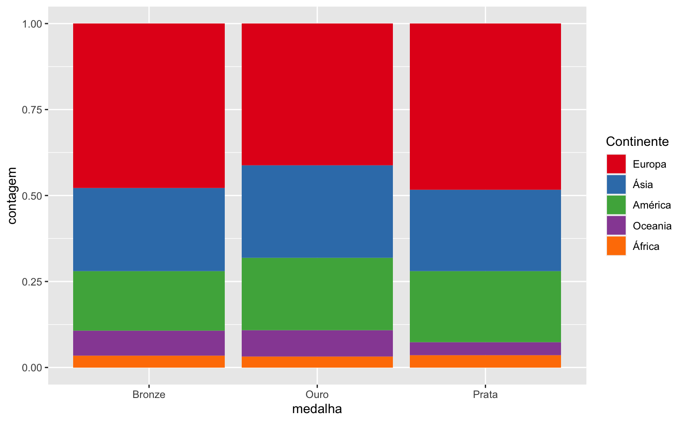
Renomeando os eixos do gráfico
É muito importante que um gráfico seja o mais auto-explicativo possível. Para isso precisamos inserir informações relevantes como título, subtítulo e fonte.
A função labs() permite facilmente renomear os eixos do gráfico. Os argumentos principais são os abaixo.
title- título do gráficosubtitle- subtítulo do gráficox- título do eixo-x (horizontal)y- título do eixo-y (vertical)caption- legenda abaixo do gráfico (em geral, a fonte)
Novamente, utilizamos o sinal de soma para adicionar estes elementos ao gráfico.
ggplot(data = olimp_continentes, aes(x = medalha, y = contagem)) +
geom_col(aes(fill = continente), position = "fill") +
scale_fill_brewer(type = "qual", palette = 6) +
labs(
title = "Europa lidera Olimpíadas",
subtitle = "Medalhas obtidas por continente nas Olimpíadas de Tóquio 2020",
x = "Tipo da medalha",
y = "Share de medalhas",
caption = "Fonte: www.olympiandatabase.com"
)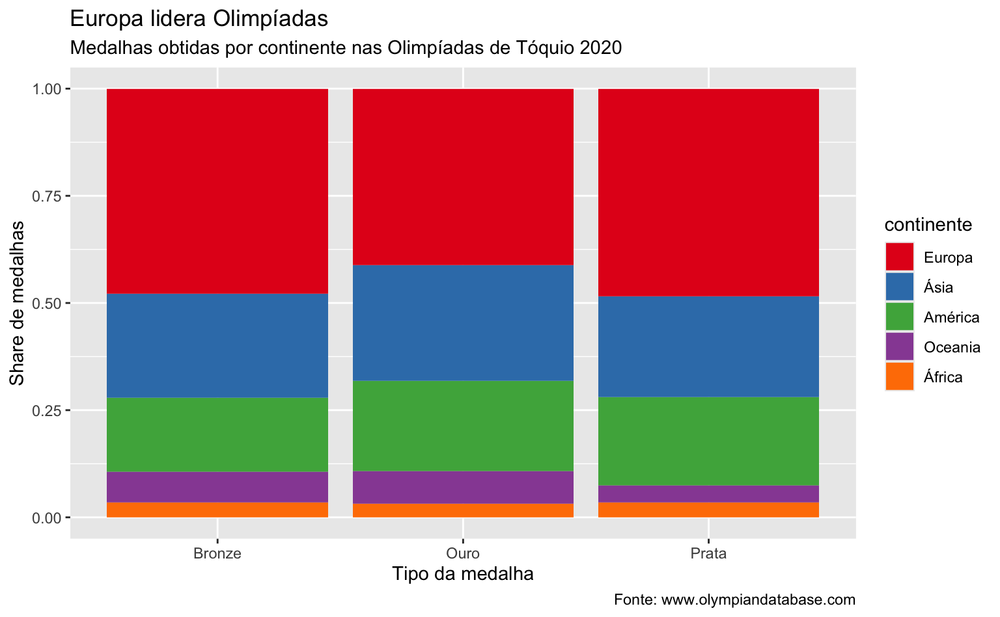
Invertendo os eixos
Para facilitar a visualização das categorias pode ser interessante inverter os eixos do gráfico. Para isto usa-se o coord_flip(). Vale notar que é possível inverter os eixos de qualquer tipo de gráfico do ggplot.
Para este exemplo, vamos utilizar a base de dados gapminder. Este base compila dados de PIB per capita, população e expectativa de vida de vários países ao longo dos anos. Como o número de países é muito grande, vamos nos concentrar somente nos países do continente americano. Além disso, vamos olhar somente para as observações em 2007.
library("gapminder")
data("gapminder")| country | continent | year | lifeExp | pop | gdpPercap |
|---|---|---|---|---|---|
| Afghanistan | Asia | 1952 | 29 | 8425333 | 779 |
| Albania | Europe | 1952 | 55 | 1282697 | 1601 |
| Algeria | Africa | 1952 | 43 | 9279525 | 2449 |
| Angola | Africa | 1952 | 30 | 4232095 | 3521 |
| Argentina | Americas | 1952 | 62 | 17876956 | 5911 |
| Australia | Oceania | 1952 | 69 | 8691212 | 10040 |
| Austria | Europe | 1952 | 67 | 6927772 | 6137 |
| Bahrain | Asia | 1952 | 51 | 120447 | 9867 |
| Bangladesh | Asia | 1952 | 37 | 46886859 | 684 |
| Belgium | Europe | 1952 | 68 | 8730405 | 8343 |
O código abaixo seleciona as linhas relevantas.
# Selecionar apenas os países das Américas em 2007
americas <- subset(gapminder, continent == "Americas" & year == 2007)Vamos montar um gráfico de colunas para comparar a expectativa de vida nos países do continente americano.
ggplot(data = americas, aes(x = country, y = lifeExp)) +
geom_col() +
labs(title = "Expectativa de Vida") +
coord_flip()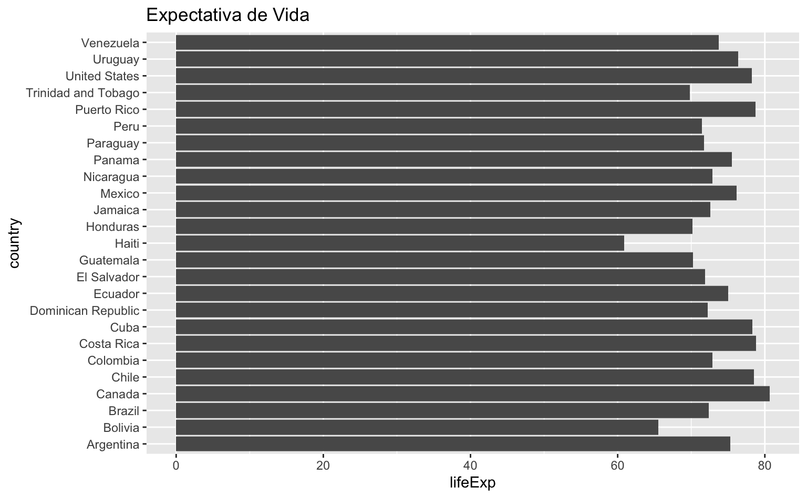
Podemos melhorar o gráfico acima reordenando as colunas. Como comentei acima, podemos definir a ordem de uma variável categórica usando o argumento levels da função factor().
Imagine que você tem uma série de avaliações que podem ser “Bom”, “Médio” ou “Ruim” armazenadas num vetor chamado feedback. Para estruturar esta variável como factor é preciso definir qual a ordem destes valores. No exemplo abaixo define-se uma relação crescente: de “Ruim” até “Bom”.
feedback <- c("Bom", "Bom", "Médio", "Ruim", "Médio", "Médio")
satisfacao <- factor(feedback, levels = c("Ruim", "Médio", "Bom"))
satisfacao[1] Bom Bom Médio Ruim Médio Médio
Levels: Ruim Médio BomNo nosso caso, queremos que a ordem do nome dos países seja a mesma que a ordem de grandeza da expectativa de vida. Para fazer isto usamos a função order(). O código abaixo pode parecer confuso à primeira vista, mas veremos maneiras de simplificá-lo em posts futuros.
lvls <- americas[["country"]][order(americas[["lifeExp"]])]
americas["country_order"] <- factor(americas[["country"]], levels = lvls)O gráfico de colunas agora está ordenado. Note que também modifico o título dos eixos para suprimir um deles definindo x = NULL.
ggplot(data = americas, aes(x = country_order, y = lifeExp)) +
geom_col() +
labs(
title = "Expectativa de Vida",
x = NULL,
y = "Anos") +
coord_flip()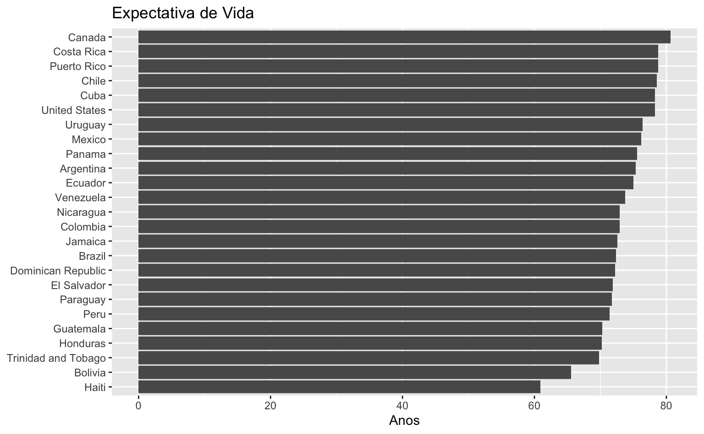
Estatísticas descritivas
O ggplot permite visualizar estatísticas descritivas simples diretamente, dispensando a manipulação dos dados. Voltando ao nosso exemplo inicial do preços de imóveis na base hprice1 podemos visualizar o preço mediano dos imóveis por número de dormitórios.
Para fazer isto inserimos o argumento stat = "summary_bin" dentro da função geom_bar(). Além disso, precisamos adicionar a função desejada pelo argumento fun`.
# Preço mediano por número de dormitórios
ggplot(data = hprice1, aes(x = factor(bdrms), y = price)) +
geom_bar(stat = "summary_bin", fun = median)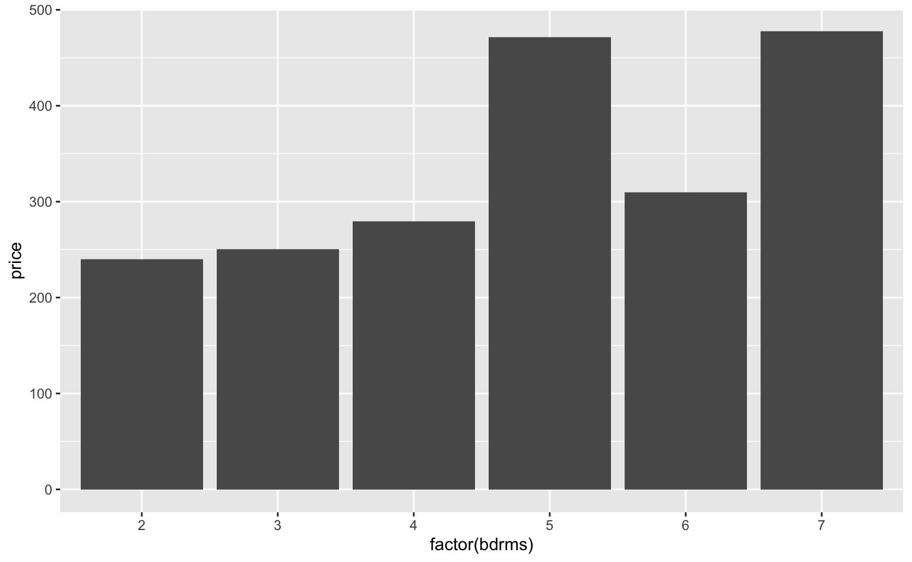
Da mesma forma, podemos comparar o preço médio dos imóveis por número de dormitórios.
# Preço médio por número de dormitórios
ggplot(data = hprice1, aes(x = factor(bdrms), y = price)) +
geom_bar(stat = "summary_bin", fun = mean)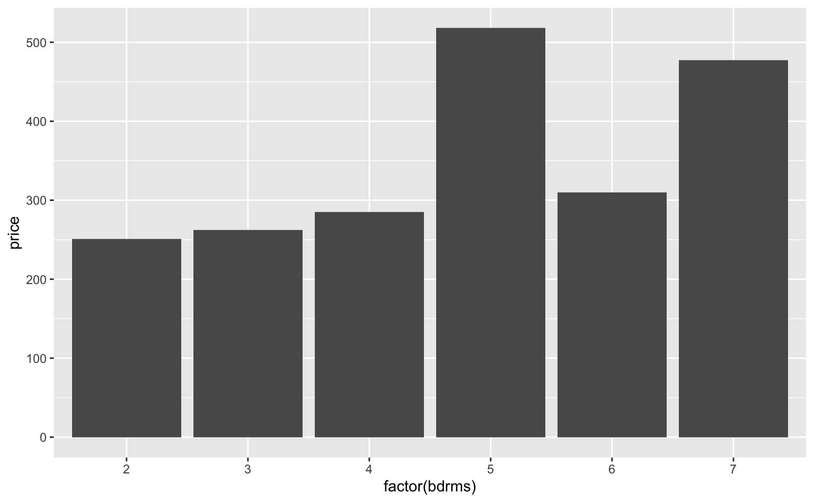
Isto pode ser utilizado para visulizar rapidamente o valor médio entre grupos distintos. Na base hprice1, a varíavel colonial indica o estilo arquitetônico do imóvel. Em particular se colonial = 1 o imóvel tem um estilo colonial (rústico). Caso contrário colonial = 0.
# Preço médio comparando imóveis coloniais e não-coloniais
ggplot(data = hprice1, aes(x = factor(colonial), y = price)) +
geom_bar(stat = "summary_bin", fun = mean)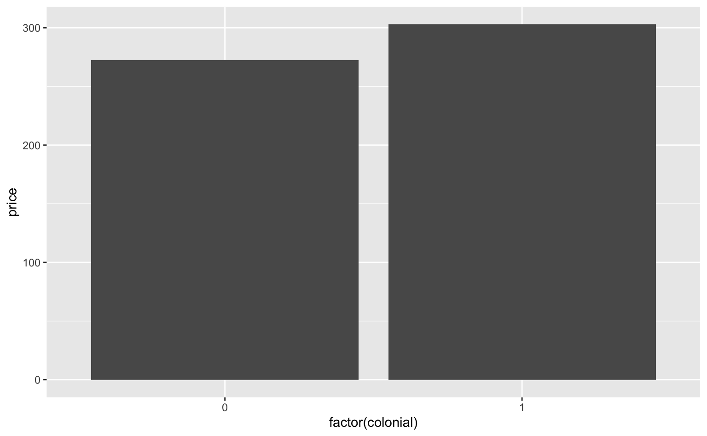
Resumo
Neste post aprendemos o básico da estrutura sintática do ggplot e conseguimos montar gráficos de colunas/barras sofisticados usando poucas linhas de código. Em qualquer gráfico temos três elementos básicos
- Dados - nossa tabela de dados.
- Função
aes()- que transforma os dados em objetos visuais. - Objeto geométrico (
geom) - que escolhe qual o formato destes objetos visuais.
Alguns pontos importantes:
- A ordem das colunas é definida pelos níveis da variável
x. Para reordenar as colunas é preciso definir uma nova ordem usandofactor(x, levels = c(...)). - Além dos elementos estéticos, gráficos de colunas tem o argumento
positionque define o comportamento do gráfico. - A função
geom_bar()conta a ocorrência dos valores nos dados e pode ser utilizada também para informar outras estatísticas descritivas. - A função
geom_col()exige os argumentosxey, ondeydefine a altura da coluna no gráfico.
Seguindo esta lógica e somando os objetos podemos criar belos gráficos.
ggplot(data = hprice1, aes(x = factor(bdrms), y = price)) +
geom_bar(
stat = "summary_bin",
fun = median,
fill = "#264653") +
labs(
title = "Preço mediano do imóvel por número de dormitórios",
x = "Número de dormitórios",
y = "Preço (USD milhares)",
caption = "Fonte: Wooldridge (Boston Globe)"
)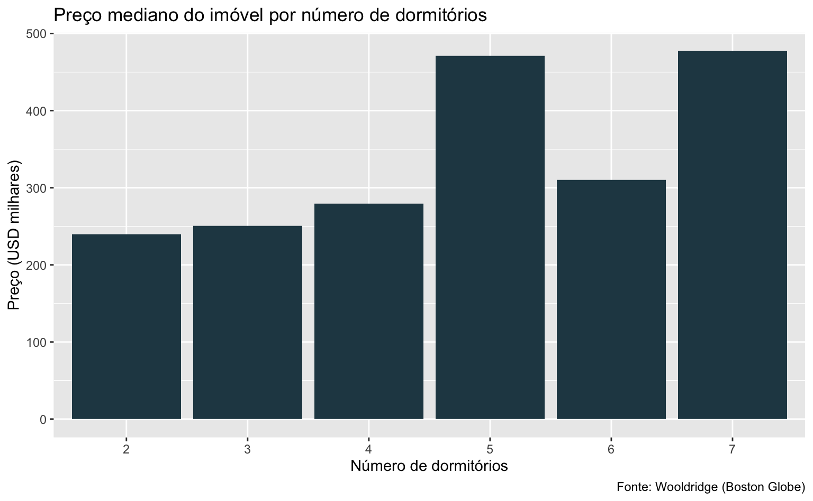